Tugas asesor di aplikasi — menyiapkan tanda tangan dan CV, menandatangani FR.AK.01, menilai Esai, Wawancara,
dan Ujian Praktik/Keterampilan, memeriksa Rekap Nilai, lalu menyusun Laporan Asesmen FR.AK.05.
Login: /login (email + password)Versi: November 2026Panduan di aplikasi: menu Panduan
Isi panduan
Gambaran tugas asesor
Login & Dashboard
Tanda tangan & CV
TTD FR.AK.01
Penilaian Esai
Penilaian Wawancara
Penilaian Ujian Praktik/Keterampilan
Rekap Nilai
Laporan Asesmen (FR.AK.05)
Pertanyaan umum
1Gambaran tugas asesor
Asesor hanya melihat sesi dan peserta yang ditugaskan admin kepadanya. Verifikasi dokumen persyaratan (FR.APL.01) bukan
tugas asesor — itu ditangani admin.
Sebelum ujianSimpan TTD & lengkapi CV
Sebelum / saat ujianTTD FR.AK.01 peserta
Setelah ujianNilai Esai, Wawancara, Praktik
PeriksaRekap Nilai
AkhirLaporan FR.AK.05 (K/BK)
LanjutPengambil Keputusan → Manager Sertifikasi
Pilihan Ganda dinilai otomatis oleh sistem — asesor tidak perlu menilai.
Nilai Akhir dihitung sistem dari komponen yang ada sesuai bobot skema (Komposisi Nilai). Bobot diterapkan sekali saat
Nilai Akhir dihitung, bukan di halaman penilaian.
Keputusan resmi Kompeten/Belum Kompeten ditetapkan setelah verifikasi Pengambil Keputusan dan finalisasi Manager Sertifikasi.
2Login & Dashboard
Buka /login, masukkan email dan password asesor, lalu klik LOGIN. Anda diarahkan otomatis ke Dashboard Asesor.
Dashboard memuat semua sesi yang pesertanya ditugaskan kepada Anda, dibagi tab Sesi Aktif dan
Sesi Selesai. Sesi pindah ke Sesi Selesai setelah tugas Anda untuk semua peserta lengkap
(TTD AK.01, nilai esai, nilai wawancara); progresnya tampil di kartu (mis. Esai 1/2). Peserta yang
tidak mengikuti ujian tidak dihitung. Nama sesi bisa sama untuk beberapa batch — bedakan lewat label Batch dan jadwalnya.
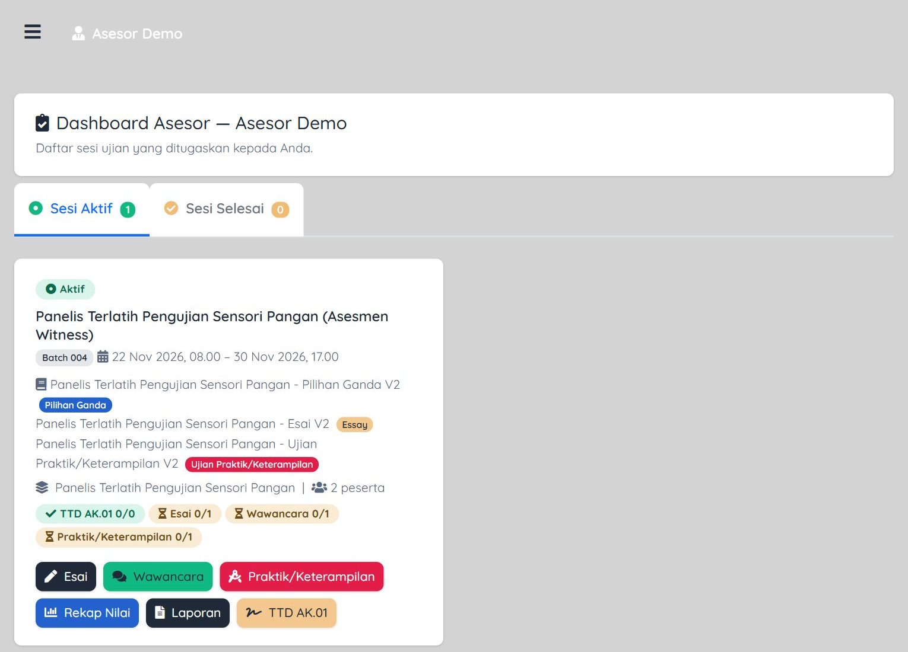
Dashboard Asesor — kartu sesi dengan progres dan tombol penilaian
Tombol di kartu sesi
Fungsi
Esai
Menilai jawaban esai peserta.
Wawancara
Mengisi nilai kriteria wawancara per peserta.
Praktik/Keterampilan
Menilai Ujian Praktik/Keterampilan dengan rubrik FR.IA.04.
Rekap Nilai
Melihat nilai semua komponen dan Nilai Akhir (baca saja).
Laporan
Rekomendasi K/BK, catatan, dan unduh FR.AK.05.
TTD AK.01
Menandatangani FR.AK.01 peserta yang ditugaskan kepada Anda.
Tombol hanya muncul bila dipakai sesi itu
Contoh: sesi Lifting hanya berisi Pilihan Ganda + dua bagian Ujian Praktik, sehingga tombol Esai dan Wawancara tidak tampil.
Setiap halaman portal juga punya kotak Panduan halaman ini yang bisa ditampilkan/disembunyikan.
3Tanda tangan & CV
Tanda tangan (sekali untuk semua sesi)
Di kartu Tanda Tangan Anda (halaman Laporan atau TTD AK.01), pilih Gambar atau
Upload, lalu klik Simpan Tanda Tangan. Tanda tangan ini dipakai otomatis
di FR.AK.05 dan saat menandatangani FR.AK.01. Tanpa tanda tangan tersimpan, tombol Tandatangani tidak aktif.
CV Saya
Menu CV Saya menerbitkan CV resmi asesor LSP dalam PDF.
Isi data pribadi dan tiap bagian (pendidikan, pelatihan, pengalaman, keahlian, sertifikasi). Tambah baris dengan
+ Tambah Baris, hapus dengan ikon tempat sampah.
Klik Simpan CV di bagian paling bawah, baru kemudian Unduh PDF
— PDF dibuat dari data yang sudah tersimpan.
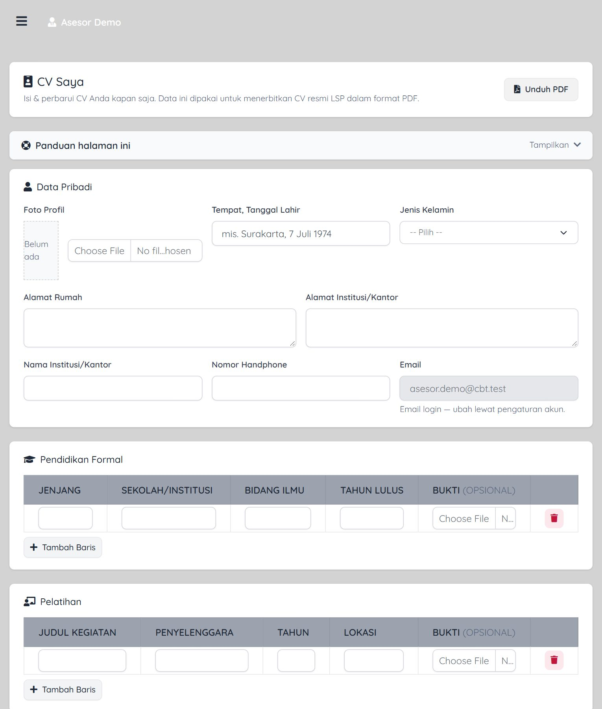
Halaman CV Saya
4TTD FR.AK.01
FR.AK.01 (Persetujuan Asesmen, Ketidakberpihakan, Kerahasiaan) ditandatangani asesor untuk setiap peserta yang ditugaskan kepadanya.
Pastikan tanda tangan Anda sudah tersimpan (kartu Tanda Tangan Anda di atas daftar).
Klik Preview untuk melihat dokumen FR.AK.01 peserta di tab baru.
Klik Tandatangani pada baris peserta, lalu konfirmasi. Status menjadi Sudah beserta tanggalnya.
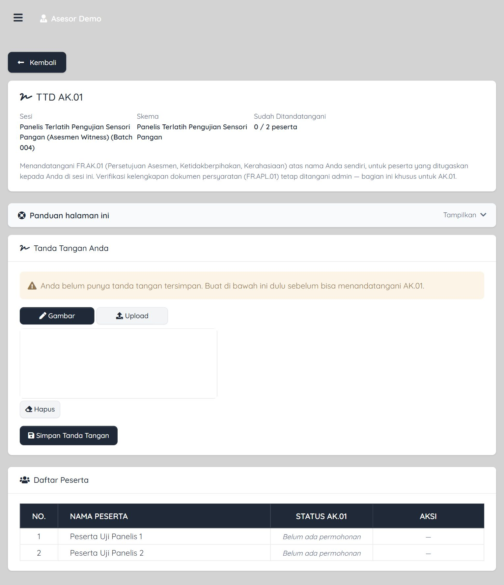
Halaman TTD AK.01 — "Belum ada permohonan" berarti peserta belum punya permohonan sertifikasi
Tidak bisa dibatalkanFR.AK.01 yang sudah ditandatangani tidak bisa ditandatangani ulang lewat aplikasi
dan tetap memakai tanda tangan yang berlaku saat itu, walaupun Anda mengganti tanda tangan sesudahnya.
5Penilaian Esai
Klik Esai di kartu sesi. Daftar peserta menampilkan Progress (soal dinilai / total soal) dan
Total. Klik baris peserta atau tombol Nilai.
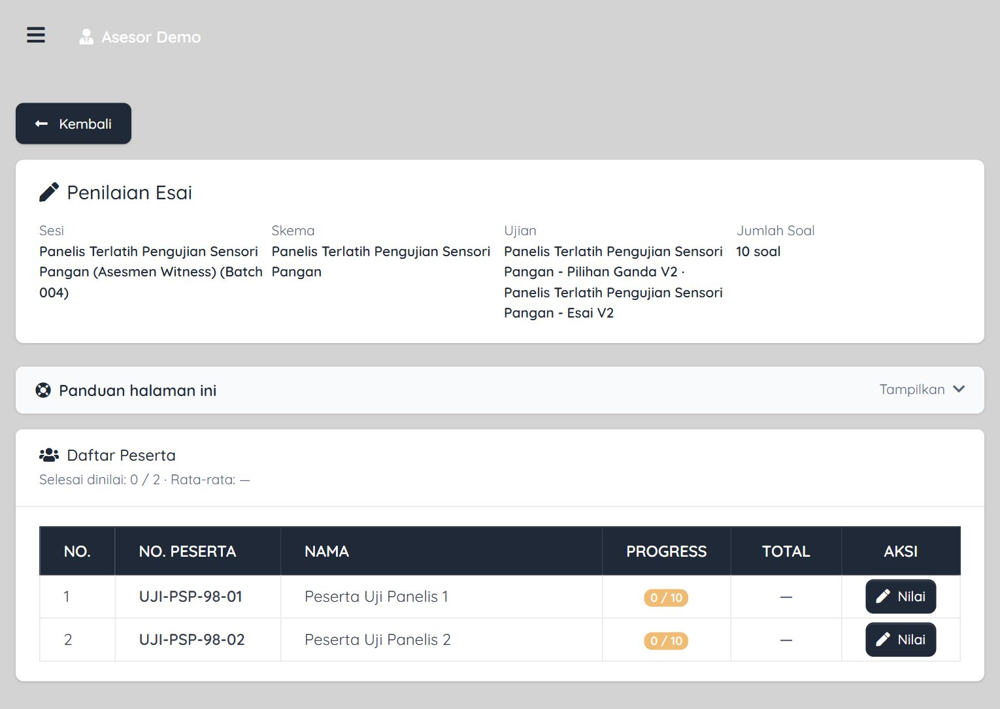
Daftar peserta Penilaian Esai
Halaman per peserta berisi satu kartu per soal: pertanyaan, lalu jawaban peserta dan kolom Nilai (0–100).
Klik Lihat poin / kisi jawaban untuk membuka kunci/panduan jawaban soal itu sebagai acuan.
Skema dengan rubrik FR.IA.06 (mis. HSE, Corporate Legal, ESG, Panelis) menampilkan kartu Panduan Penilaian Umum di atas soal dan
Matriks penilaian per soal (mis. 90–100 Sangat Baik … 10–29 Sangat Kurang). Klik rentang yang paling sesuai: nilai tertinggi
rentang itu terisi, lalu sesuaikan angkanya bila perlu.
Untuk Essay Migas, berkas jawaban peserta ada di kartu paling atas (Pratinjau / Unduh).
Gunakan bar di kanan bawah: Simpan, Simpan & Berikutnya
(peserta berikutnya, urut No. Peserta), atau Sebelumnya.
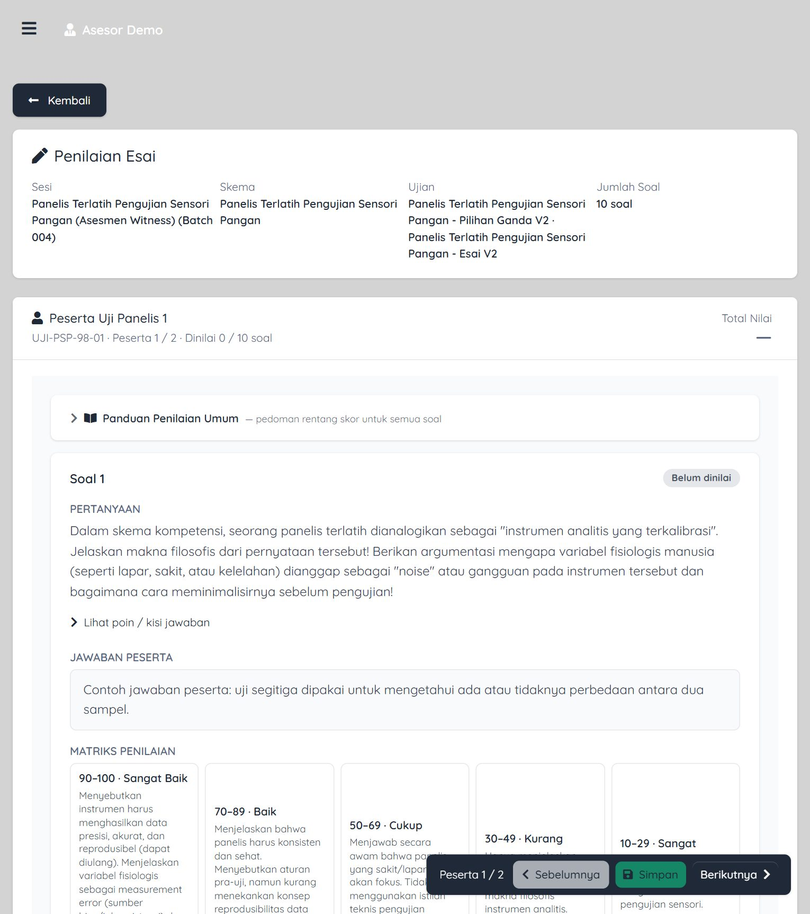
Halaman nilai esai per peserta dengan matriks penilaian dan bar Simpan
Simpan sebelum pindah pesertaNilai baru tersimpan setelah tombol Simpan diklik. Bila masih ada nilai yang
belum disimpan, bar menampilkan "Belum disimpan" dan Anda diminta konfirmasi sebelum meninggalkan halaman.
Total Nilai Esai = rata-rata nilai soal yang sudah diisi (nilai 0 ikut dihitung; soal yang dikosongkan tidak). Badge
Remidi menandai peserta yang mengikuti ujian ulang.
6Penilaian Wawancara
Klik Wawancara. Satu baris per peserta; isi setiap kriteria dengan skala 0–100:
Kode
Kriteria
Dipakai bila
A
Gaya Wawancara
Selalu
B
Penguasaan Materi
Selalu
C
Kemampuan Menghadapi Pertanyaan
Selalu
D
Hasil Pengerjaan Worksheet Ujian Keterampilan
Hanya sesi tanpa Ujian Praktik/Keterampilan (sesi Upload Tugas biasa)
Total = rata-rata kriteria yang terisi. Pada sesi yang memakai Ujian Praktik/Keterampilan, kolom D tidak tampil karena
keterampilan dinilai di halaman Praktik/Keterampilan; total = rata-rata A–C.
Kolom Tugas: ikon mata membuka hasil unggahan peserta di tab baru (PDF, DOCX, JPG, PNG bisa langsung dilihat), ikon unduh
mengunduhnya. Ujian praktik dua bagian menampilkan tombol bernomor 1 dan 2. Tanda "-" = belum mengunggah.
Catatan boleh dikosongkan.
Klik Simpan Semua Nilai di kanan atas kartu Daftar Peserta untuk menyimpan seluruh tabel.
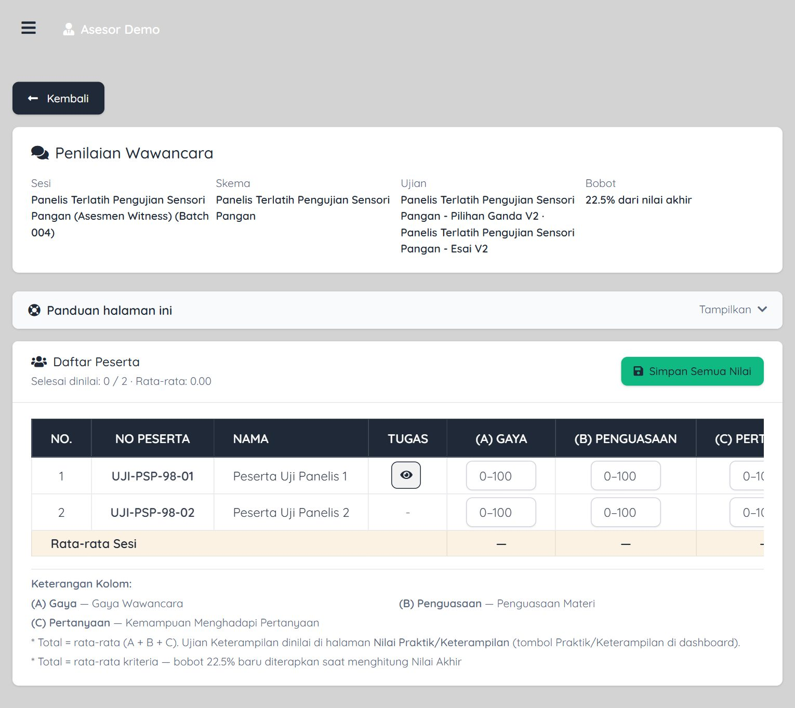
Penilaian Wawancara — sesi dengan Ujian Praktik/Keterampilan (kriteria A–C)
7Penilaian Ujian Praktik/Keterampilan
Klik Praktik/Keterampilan. Daftar peserta menampilkan hasil unggahan (ikon mata) dan progres aspek
(mis. 0/5 aspek). Klik Nilai untuk menilai satu peserta.
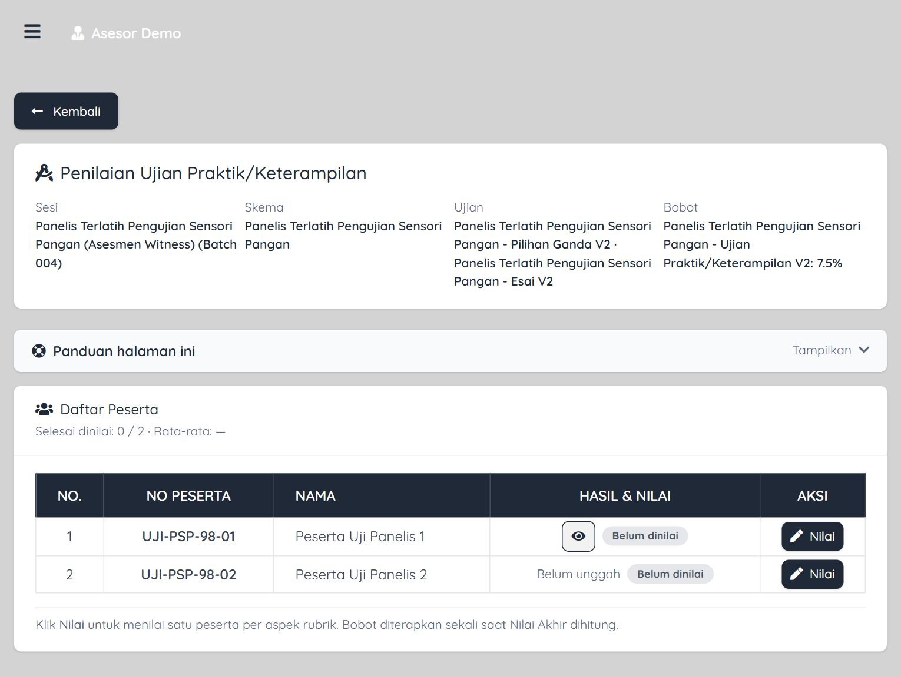
Daftar peserta Penilaian Ujian Praktik/Keterampilan
Satu kartu per aspek rubrik FR.IA.04 berisi bobot, sumber bukti, poin kunci, dan kriteria tiap rentang skor.
Klik Lihat hasil unggahan untuk membuka pekerjaan peserta.
Klik rentang yang sesuai untuk mengisi nilai tertinggi rentang itu, lalu sesuaikan angkanya (0–100). Catatan per aspek boleh diisi.
Gerbang kritis (mis. ESG, GLP, QC, Food Safety, Panelis): bila ada gerbang yang gagal, centang
"Ada gerbang kritis yang gagal" — nilai aspek itu maksimal 50.
Aspek per butir (Lifting): pilih Ada & Benar / Ada tapi Salah / Tidak Ada per butir; nilai aspek = jumlah butir.
Klik pilihan yang sama lagi untuk membatalkan.
Nilai bagian = Σ (nilai aspek × bobot aspek), dihitung otomatis setelah semua aspek terisi. Isian yang belum lengkap tetap tersimpan.
Bar di kanan bawah: Simpan, Simpan & Berikutnya,
Sebelumnya.
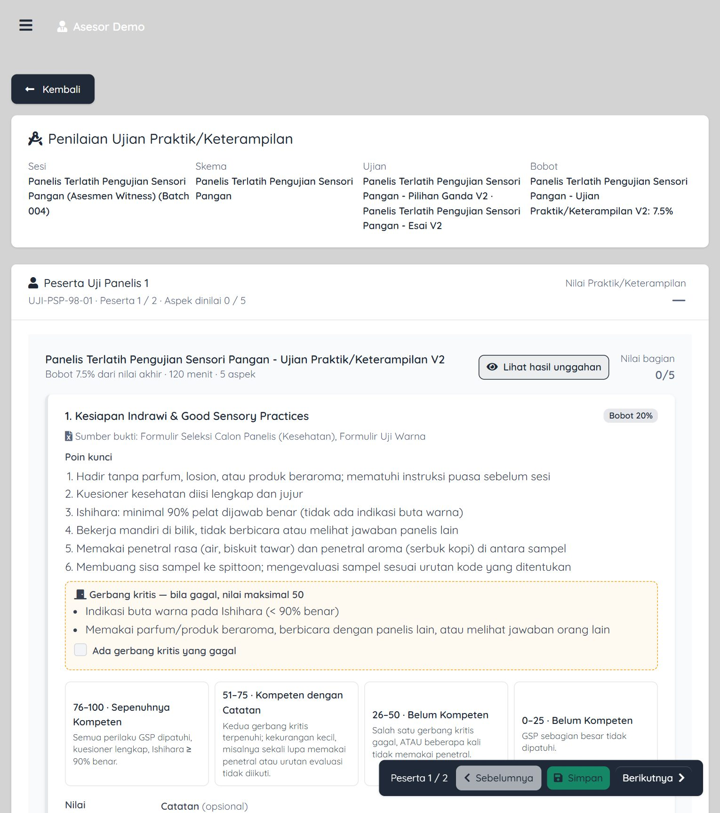
Nilai praktik per peserta — kartu aspek dengan gerbang kritis dan rentang skor
8Rekap Nilai
Klik Rekap Nilai untuk melihat (tanpa mengubah) nilai PG, Esai, Wawancara, Praktik, Nilai Akhir,
keputusan sementara, dan rekomendasi K/BK Anda untuk peserta yang ditugaskan kepada Anda.
belum dinilai menandai komponen yang masih menunggu nilai dari Anda.
Selama ada komponen yang belum dinilai, Nilai Akhir dihitung dari komponen yang ada dan masih bisa berubah.
Lulus (sementara) dihitung otomatis dari nilai kelulusan skema; berubah menjadi Lulus/Tidak Lulus setelah difinalisasi.
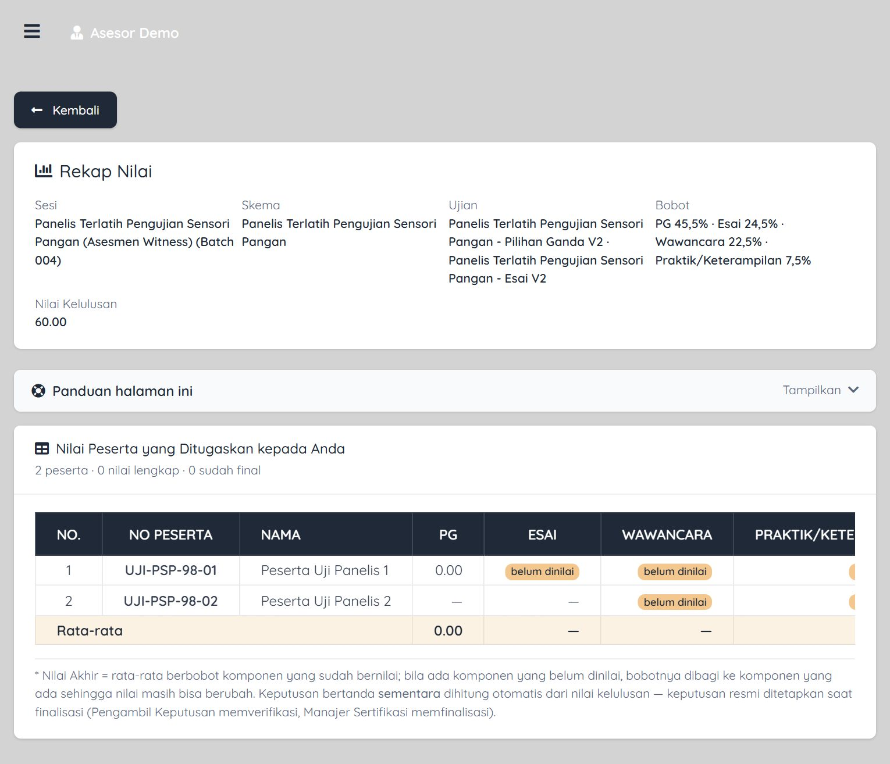
Rekap Nilai — bobot komponen tampil di bagian atas
9Laporan Asesmen (FR.AK.05)
Klik Laporan. Halaman ini punya tiga bagian, masing-masing dengan tombol simpan sendiri:
Tanda Tangan Anda — lihat bagian 3.
Rekomendasi Asesi — klik K (Kompeten) atau BK (Belum Kompeten)
per peserta, lalu Simpan Rekomendasi. Rekomendasi bisa diubah sampai peserta difinalisasi; setelah itu terkunci.
"Tidak ada aplikasi" berarti peserta belum punya permohonan sertifikasi.
Catatan Laporan Asesmen — tanggal pelaksanaan dan empat kolom catatan sudah berisi teks contoh. Sunting seperlunya, lalu
Simpan Laporan.
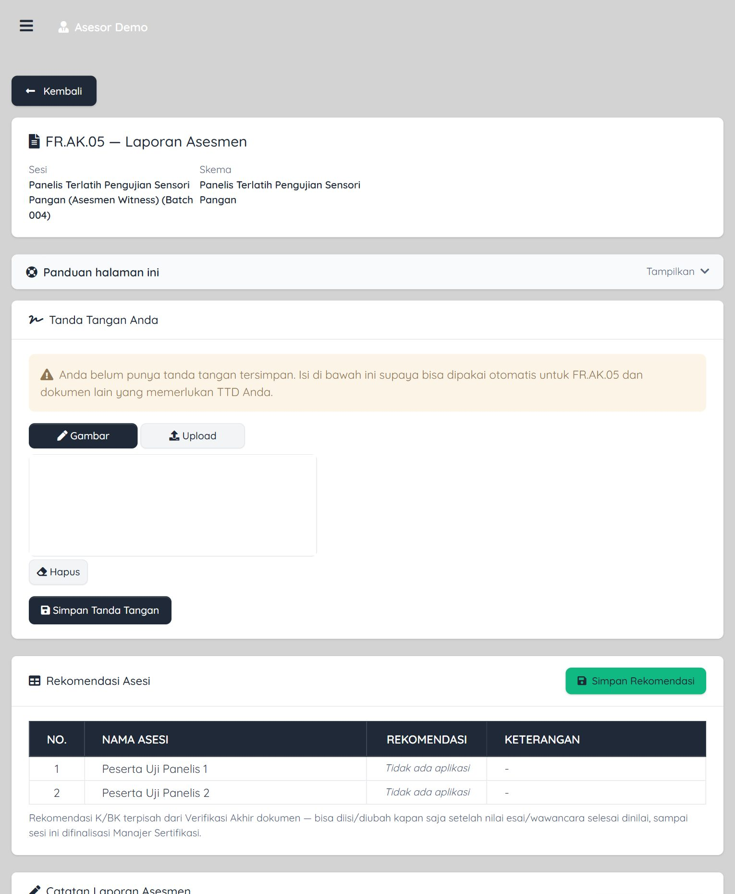
Tanda tangan dan Rekomendasi Asesi
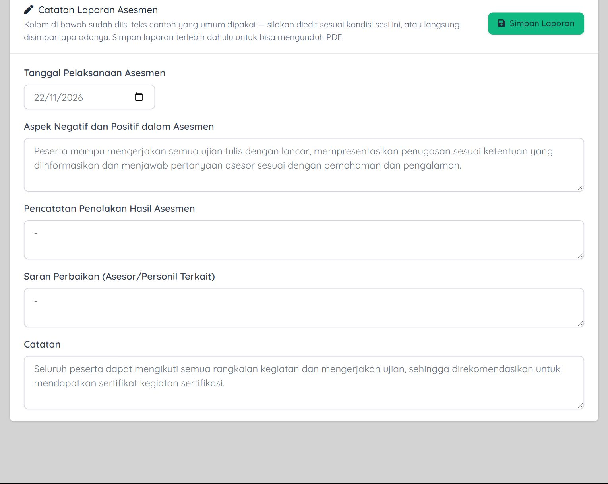
Catatan Laporan Asesmen
Tombol Download PDF (FR.AK.05) muncul setelah laporan disimpan pertama kali. Isinya rekomendasi semua
peserta Anda di sesi itu, catatan, dan tanda tangan Anda.
10Pertanyaan umum
Sesi atau peserta tidak muncul di Dashboard.
Penugasan asesor dilakukan admin per peserta di detail sesi. Hubungi admin bila ada peserta yang belum ditugaskan kepada Anda.
Tombol Esai/Wawancara tidak ada.
Sesi itu tidak memakai ujian tersebut (mis. Lifting: PG + Ujian Praktik saja).
Nilai sudah diisi tetapi Rekap masih "belum dinilai".
Pastikan sudah menekan Simpan / Simpan Semua Nilai, lalu muat ulang halaman Rekap.
Peserta mengikuti remidi atau kerjakan ulang.
Nilai esai peserta itu dikosongkan agar dinilai ulang; peserta tampil dengan badge Remidi atau progres kembali belum lengkap.
Saya salah menandatangani AK.01.
Tidak bisa dibatalkan di aplikasi — hubungi admin.
Selesai. Setelah nilai dan Laporan Asesmen lengkap, hasil peserta di sesi tersebut siap diverifikasi Pengambil Keputusan
dan difinalisasi Manager Sertifikasi. Panduan yang sama tersedia di menu Panduan portal asesor.